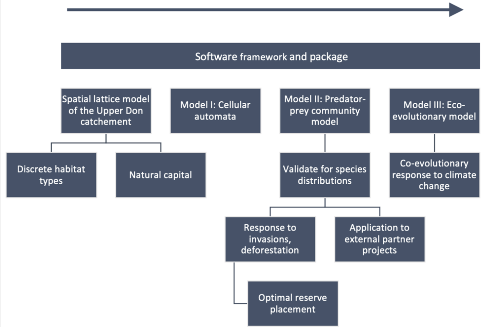

Sustainability and ecological modelling in the Peak District
This is a proposed concept for a project that would seek to apply our expertise and experience in ecological modelling much more directly,
designing foodweb models several discrete habitat varieties in areas of the Peak District in order to give simulation-backed recommendations on conservation and landscape management
with external partners. The strength of the project would be to combine the population dynamics of relatively simple bespoke foodwebs with highly-detailed spatial maps constructed from GIS data.
Background
How will natural ecosystems respond to deforestation, urban development and other anthropological causes of habitat destruction or disruption such as pollution?
Furthermore, how will evolutionary pressures shape communities of species in response to climate and temperature change?
These questions pose significant concern for the sustainable urban expansion and for directing conservation efforts.
Researchers cannot answer such questions by direct experimentation, and to alter the course of events we cannot wait to observe them when they happen.
Therefore, we attempt to predict these responses using mathematical and computational modelling.
A significant aspect of an ecosystem that can be represented by a theoretical model are the feeding relationships,
which when represented diagrammatically form a “food web”. Together with mathematical representations of the major processes
that govern the size of populations (reproduction, competition for resources, and mortality), we can model how the populations of an
interdependent community of species will behave over time. This is an ecological community model.
They can be extended spatially to model the interaction of multiple local ecosystems arranged on a landscape with migration between adjacent patches.
Some models furthermore incorporate evolutionary processes, assembling model communities by simulation which possess implicit relationships
(and hence, responses to perturbation) of a community that is truly co-evolved.
The use of mathematical models in population management is well-established in fisheries, and ecologists have used simple population
models to simulate species behaviour on complex spatial environments. Meanwhile, conservation and development projects are underway in the Peak District,
however such projects often lack a unified and systematic modelling basis to consider the potential impact on biodiversity when making planning decisions.
The ecological community models developed in this project will be applied to spatial models of the Upper Don catchment area,
both using this landscape as a case study for computational modelling and providing modelling-based recommendations to support projects by external
partners working in this region.
Furthermore, there has been little effort to utilise sophisticated eco-evolutionary models for such studies.
Simulated co-evolved communities may then be subjected to perturbations to directly test the effect of species invasions,
unexpected extinctions of species, or the removal of patches of the spatial network using the computational equivalent of in situ experiments.
In such a way, we can better understand the mechanisms at work in such complex systems and make recommendations for mitigating the worst effects
of these environmental challenges to promote biodiversity.
Aims
The overall aim of this project will be to develop spatial ecological models with which they can conduct simulations of population dynamics in the Upper Don catchment to facilitate decision-making on environmental projects. Specific objectives are as follows:
- Design a variety of ecological community models suitable for representing the ecosystems of the Upper Don at
different levels of complexity.
- Develop a software framework allowing simulation of these models on a spatial landscape, parallelised
experiments performed on the generated communities, and analysis and visualisation of the outputs.
- Predicting the impact of deforestation, climate change, and urban development in the Upper Don.
Methodology
- Develop a lattice model of the geographic features of the Upper Don catchment, consisting of sites on the field scale and representing the discrete habitat type, natural capital, and estimated ecological richness.
- Develop first attempt at a spatial ecological community model using a cellular automata approach to observe global dynamic evolutions of species governed by local interaction rules.
- Consult with local ecologists to obtain reasonable data on the most important species/species-types in the Yorkshire region, their feeding relationships and relative mobility.
- Develop simplified predator-prey ecosystem models of the food webs in each of the habitat types, implementing preference feature for the species with its preferred habitat.
- Validate model for Upper Don catchment area.
- Using this model:
- Conduct parallelised simulations of habitat disruption, flooding, pollution, species invasions and similar ecological challenges to biodiversity. Which areas or ecosystems are most at risk? What is the ideal placement of nature reserves on the landscape?
- Apply this model to support the specific research questions of third-party collaborators.
- Re-develop existing code for spatial eco-evolutionary modelling in OOP style, refining existing models. This
should include modelling of temperature dependence of bodysize effects and migratory patterns.
- Use this model to study the predicted impact of climate change and longer-term challenges on the characteristics
of the meta-community as it continues to co-evolve.
- Develop software framework to facilitate handling of simulation results, including the ability to easily compare
results across model designs. Construct a sustainable and re-usable codebase and software framework (possibly including UI)
for experiment design, simulation, data storage (for potential re-use) and visualisation of outputs.

Project flowchart.